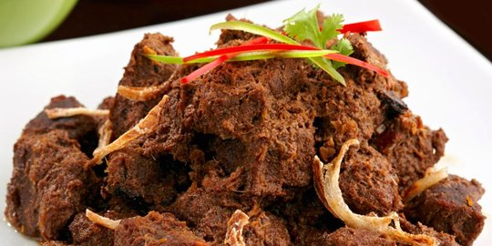
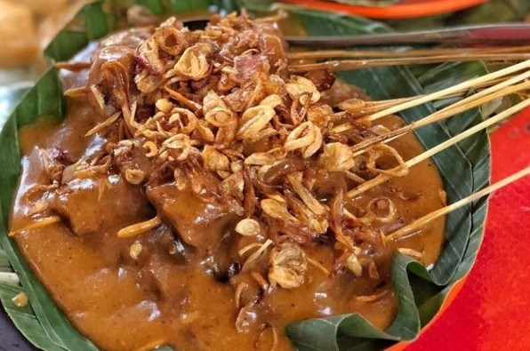
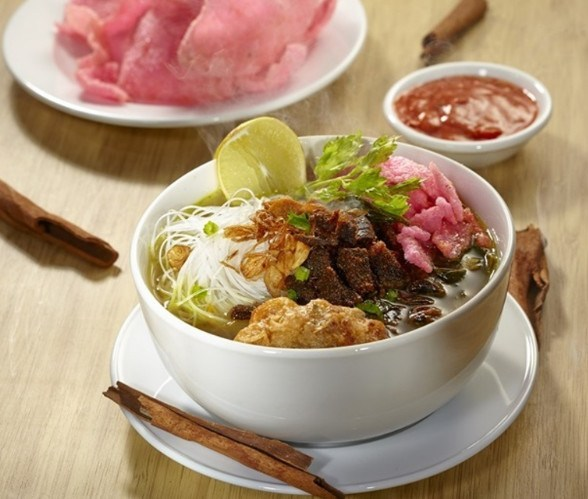
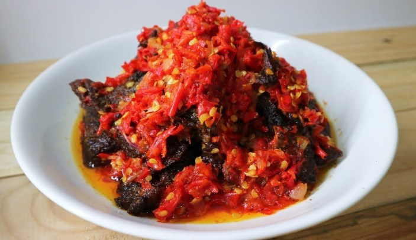
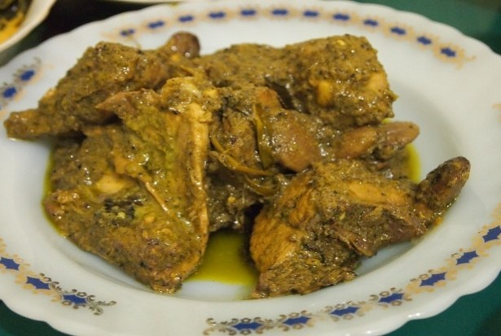

1.Rendang
Rendang atau randang (Jawi: رندڠ) adalah masakan daging yang berasal dari Minangkabau. Masakan ini dihasilkan dari proses memasak suhu rendah dalam waktu lama menggunakan aneka rempah-rempah dan santan. Proses memasaknya memakan waktu berjam-jam (biasanya sekitar empat jam) hingga yang tinggal hanyalah potongan daging berwarna hitam pekat dan dedak. Dalam suhu ruangan, rendang dapat bertahan hingga berminggu-minggu. Rendang yang dimasak dalam waktu yang lebih singkat dan santannya belum mengering disebut kalio, berwarna cokelat terang keemasan.
Rendang dapat dijumpai di Rumah Makan Padang di seluruh dunia. Masakan ini populer di Indonesia dan negara-negara Asia Tenggara lainnya, seperti Malaysia, Singapura, Brunei, Filipina dan Thailand. Di daerah asalnya, Minangkabau, rendang disajikan di berbagai upacara adat dan perhelatan istimewa. Meskipun rendang merupakan masakan tradisional Minangkabau, teknik memasak serta pilihan dan penggunaan bumbu rendang berbeda-berda menurut daerah.
Pada 2011, rendang dinobatkan sebagai hidangan yang menduduki peringkat pertama daftar World's 50 Most Delicious Foods (50 Hidangan Terlezat Dunia) versi CNN International.[1] Pada 2018, rendang secara resmi ditetapkan sebagai salah satu dari lima hidangan nasional Indonesia.
Rendang dimanfaat sebagai bantuan pangan bagi korban bencana alam karena tahan lama dan kandungan gizinya, seperti pada gempa bumi Lombok 2018, gempa bumi dan tsunami Sulawesi 2018, tsunami Selat Sunda 2018, dan banjir Bengkulu 2019.Bumbu rendang diolah secara fusion untuk makanan seperti spageti, mi, burger, hingga susyi.[

2.Sate Padang
Sate Padang adalah sebutan untuk tiga jenis varian sate di Sumatra Barat, yaitu Sate Padang, Sate Padang Panjang dan Sate Pariaman.
Sate Padang memakai bahan daging sapi, lidah, atau jerohan (jantung, usus, dan tetelan)[1] dengan bumbu kuah kacang kental (mirip bubur) ditambah cabai yang banyak sehingga rasanya pedas.
Sate Padang Panjang dibedakan dengan kuah sate nya yang berwarna kuning sedangkan sate Pariaman kuahnya berwarna merah. Rasa kedua jenis sate ini juga berbeda. Sedangkan sate Padang mempunyai bermacam rasa perpaduan kedua jenis varian sate di atas.
Proses pembuatan
Pedagang Sate Padang di Pekanbaru
Daging segar dimasukkan dalan drum besar berisi air dan direbus dua kali agar lunak menggunakan drum dan air yang berbeda. Daging diiris-iris dan dilumuri dengan bumbu dan rempah-rempah. Sementara air rebusan digunakan sebagai kuah kaldu, bahan membuat kuah sate. Lalu kuah kaldu ini dicampur dengan 19 macam bumbu rempah-rempah yang telah dihaluskan (bawang merah, bawang putih, kunyit, jahe, dan serai) dicampur dengan berbagai macam cabai. Seluruh bumbu kemudian dijadikan satu dan dimasak selama 15 menit. Rempah-rempah inilah yang membuat rasa kuah sate menjadi kaya rasa yang melimpah.
Sate sendiri hanya dibakar saat dipesan, menggunakan arang dari tempurung kelapa. Dimakan dalam keadaan hangat, biasanya ditambah dengan keripik balado khas Minang. Beberapa penjual sate yang cukup dikenal oleh masyarakat Minang ataupun perantau di antaranya adalah Sate Mak Syukur Padang Panjang, Sate Dangung-Dangung, dan Sate KMS.

3.Soto Padang
Soto Padang adalah hidangan berkuah kaldu sapi dengan bahan irisan daging sapi yang sudah digoreng kering, bihun (mie dari tepung beras), ditambah perkedel kentang dan dihidangkan panas-panas. Selain di Kota Padang, Sumatra Barat, hidangan Soto Padang juga mudah ditemukan di berbagai restoran Padang di penjuru dunia.

4.Dendeng Balado
Dendeng balado adalah masakan khas Sumatra Barat dibuat dari irisan tipis dan lebar daging sapi yang dikeringkan lalu digoreng kering. Daging goreng ini lalu diberi bumbu balado.
Sedangkan dendeng batokok bahannya sama dengan dendeng balado, bedanya adalah bumbu baladonya bukan memakai cabai merah, tetapi memakai cabai hijau yang diiris kasar. Setelah diiris tipis melebar, daging sapi dipukul-pukul dengan batu cobek supaya dagingnya menjadi lembut.

5.Gulai itiak
Gulai itiak (itik) makanan khas yang terkenal dari Koto Gadang Agam, di Bukittinggi yang terletak tidak jauh dari Koto Gadang gulai itiak disebut tanak koto gadang. Masakan ini menggunakan itik sebagai bahan dasar, dengan bumbu cabe kriting hijau, laos, kunyit, jahe, daun salam daun jeruk dan daun kunyit. Membuatnya digunakan bebek (itik) muda yang setelah dipotong lalu dibakar terlebih dahulu. Hasilnya adalah gulai bebek (itik) yang bewarna hijau.